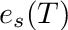
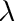
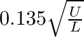
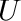
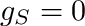
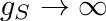
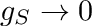
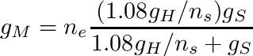
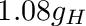
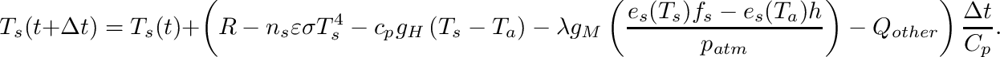

|
. v1.3.7
|
Loading...
Searching...
No Matches
|
. v1.3.7
|

| Dependencies | NVIDIA CUDA 9.0+ |
|---|---|
| CMakeLists.txt | set( PLUGINS "energybalance" ) |
| Header File | #include "EnergyBalanceModel.h" |
| Class | EnergyBalanceModel |
| Package | |||
|---|---|---|---|
| NVIDIA CUDA 9.0+ | Mac OSX:$ brew install Caskroom/cask/cuda | Use CUDA installer | Use CUDA installer |
For help choosing the correct CUDA toolkit version for your system, consult this page: Choosing the right CUDA and OptiX version
Useful OS-specific information for installing CUDA can be found here: Install and Set-up
If you are using a PC, it is likely you will need to increase the GPU timeout in the registry, otherwise calculations lasting longer than 2 secs. will timeout and kill your program. A guide on how to increase the timeout can be found here: Increasing graphics driver timeout
None.
This model plugin calculates a local energy balance for every primitive, and ultimately predics sensible, latent, and longwave fluxes as well as surface temperature. The energy balance equation is solved in parallel on the GPU to accelerate calculations.
The model is solving the steady-state budget between absorbed radiation, emitted radiation, sensible heat exchange, and latent heat exchange, which is written as
![\[ R-n_s\varepsilon\sigma T_s^4 = c_p g_H \left( T_s-T_a \right) + \lambda g_M \left(\frac{e_s(T_s)f_s-e_s(T_a)h}{p_{atm}}\right)+C_p\frac{dT_s}{dt}+Q_{other}\]](form_60.png)
Variables in this equation are listed in this table:
| Variable (units) | Description |
|---|---|
 (W/m2) (W/m2) | Absorbed all-wave radiation flux (shortwave+longwave). |
 (K) (K) | Primitive surface temperature. |
 (K) (K) | Air temperature just outside primitive boundary-layer. |
 (mol air/m2-s) (mol air/m2-s) | Conductance to heat from primitive surface to outside of boundary-layer. |
 (mol air/m2-s) (mol air/m2-s) | Conductance to moisture between sub-surface air spaces to surface (e.g., for leaves this is stomatal conductance). |
 (mol air/m2-s) (mol air/m2-s) | Conductance to moisture from primitive surface to outside of boundary-layer. |
|  (Pa) | Saturation vapor pressure at temperature T. Calculated from Tetens equation (see en.wikipedia.org/wiki/Tetens_equation) |
| Relative humidity of air at primitive surface. | |
 | Relative humidity of air outside of boundary-layer. |
 (Pa) (Pa) | Atmospheric pressure. |
 (J/m2/oC) (J/m2/oC) | Heat capacity of object. |
 (W/m2) (W/m2) | Any surface fluxes other than radiation, convection, or latent (e.g., storage). |
 | Number of primitive faces with heat transfer (e.g., typically  for leaves, and for leaves, and  for the ground. for the ground. |
Constants are given by:
| Constant (units) | Value | Description |
|---|---|---|
 (J/mol/K) (J/mol/K) | 29.25 | Heat capacity of air. |
|  (J/mol) | 44,000 | Latent heat of vaporization of air. |
| Constructors |
|---|
| EnergyBalanceModel( helios::Context* context) |
The EnergyBalanceModel class is initialized by simply passing a pointer to the Helios context as an argument to the constructor.
| Primitive Data | Units | Data Type | Description | Available Plug-ins | Default Value |
|---|---|---|---|---|---|
| radiation_flux_[*] | W/m2 | float | Net absorbed radiation flux for band [*] (e.g., radiation_flux_PAR). | Can be computed by RadiationModel plug-in. | N/A (must add at least one band) |
| wind_speed | m/s | float | Air wind speed just outside of primitive boundary-layer. | N/A | 1 m/s |
| object_length | m | float | Characteristic dimension of object formed by primitive. | N/A | Square root of primitive surface area |
| boundarylayer_conductance | mol air/m2-s | float | Leaf boundary-layer conductance to heat. | BLConductanceModel plug-in | Try calculating from model  |
| air_temperature | Kelvin | float | Ambient air temperature outside of surface boundary layer. | N/A | 300 K |
| moisture_conductance | mol air/m2-s | float | Conductance to moisture between sub-surface air spaces and surface (e.g., for leaves this is stomatal conductance). | Can be computed by StomatalConductanceModel plug-in. | 0 |
| surface_humidity | unitless | float | Relative humidity of air immediately above surface evaporating site. | N/A | 1.0 (saturated) |
| air_humidity | unitless | float | Ambient air relative humidity outside of surface boundary layer. | N/A | 0.5 |
| air_pressure | Pascals | float | Atmospheric pressure. | N/A | 101,000 Pa |
| heat_capacity | J/m2/oC | float | Heat capacity of object. | N/A | 0 |
| other_surface_flux | W/m2 | float | Other surface energy fluxes. | N/A | 0 |
| twosided_flag | N/A | uint | Flag indicating the number of primitive faces with heat transfer (twosided_flag = 0 for one-sided heat transfer; twosided_flag = 1 for two-sided heat transfer). | N/A | 1 |
| evaporating_faces | N/A | uint | Number of primitive faces from which water is evaporating (must be 1 or 2). Note: if "twosided_flag" is equal to 0, the number of evaporating faces will be automatically set to 1. | N/A | 1 |
| Primitive Data | Units | Data Type | Description |
|---|---|---|---|
| temperature | Kelvin | float | Primitive surface temperature. |
| sensible_flux | W/m2 | float | Sensible heat flux. |
| latent_flux | W/m2 | float | Latent heat flux. |
| storage_flux | W/m2 | float | Storage heat flux. |
| Primitive Data | Units | Data Type | Description |
|---|---|---|---|
| boundarylayer_conductance_out | mol air/m2-s | float | Primitive boundary-layer conductance calculated by this plug-in. |
| vapor_pressure_deficit | mol/mol | float | Surface vapor pressure deficit. |
Inputs to the model are set by creating primitive variable data in the usual way. If a variable needed for a model input has not been create in the Context, the default value is assumed.
In order for the model to calculate the absorbed all-wave radiation flux, it needs to know the names of all radiation bands that were added to the radiation model. This is done using the function addRadiationBand(). In the following examplle, assume we have three radiative wavebands "PAR", "NIR", and "LW".
// Initialize the Model
EnergyBalanceModel energybalance(&context);
energybalance.addRadiationBand("PAR");
energybalance.addRadiationBand("NIR");
energybalance.addRadiationBand("LW");The primitive boundary-layer conductance can either be set using the BLConductanceModel plug-in, or using the default model which is the Polhausen equation. Note also that custom conductance values can also be provided by setting the value of primitive data labeled 'boundarylayer_conductance', which overrides the computed model value.
It is also important to note that, by default, the length scale used to calculate the boundary-layer conductance is taken to be the square root of the primitive surface area. If the size of the object is different from the size of the primitive, then it is important to manually set the length scale to be the size of the object, as this is the relevant scale for boundary-layer development.
The default boundary-layer conductance is calculated as
 ,
,
where  is the wind speed just outside of the primitive boundary-layer, and is the characteristic length/dimension of the object that the primitive belongs to. For a leaf consisting of a single primitive, could be assumed to be the length of the primitive. is the number of primitive faces , which is determined by the value of primitive data "twosided_flag" (twosided_flag=0 is single-sided and , twosided_flag=1 is two-sided and  ).
).
For surfaces that are not completely dry or completely saturated with water, availability of water at the surface determines the rate of moisture transfer from the surface. This is represented by the surface moisture conductance , and corresponds to the conductance between the sub-surface air spaces and the surface.
For a dry surface,  and thus there is no moisture transfer at the surface. For a surface that is saturated with water (e.g., a lake, puddle),  as the supply of water at the surface is theoretically infinite.
For surfaces such as leaves and the soil in which surface moisture is present but limited, will have some intermediate value typically on the order of 0.1 mol air/m2-s.
For leaves, corresponds to the conductance to water vapor between the intercellular (sub-stomatal) air spaces and the surface of the leaf, which we call the stomatal conductance. When stomata are closed, , as water transfer is restricted by the stomata.
For the soil surface, the physical interpretation of is slightly less intuitive, and corresponds to the rate at which water vapor can diffuse from just below the soil to the surface. This is impacted by the soil texture, and the "tortuosity" of the path water vapor must take through the soil, among other factors.
Once the water vapor has diffused to the surface, the rate of transfer is then determined by the surface boundary-layer conductance. The sub-surface conductance and boundary-layer conductance act in serial, and can be combined to yield an overall moisture conductance between the sub-surface air spaces and the outside of the boundary layer according to
,
where is the boundary-layer conductance to heat, and  gives the boundary-layer conductance to moisture considering the differences in diffusivity between water vapor and heat.  is the number of evaporating surfaces of the primitive (either 1 or 2), which is set by the primitive data value "evaporating_faces". For leaves,
is the number of evaporating surfaces of the primitive (either 1 or 2), which is set by the primitive data value "evaporating_faces". For leaves,  corresponds to hypostomatous leaves (stomata on one side), and
corresponds to hypostomatous leaves (stomata on one side), and  to amphistomatous leaves (stomata on both sides).
to amphistomatous leaves (stomata on both sides).
It is important to note that if , then the value of will be overridden and also set to 1.
The model is run assuming steady-state conditions (heat storage term is zero) using the EnergyBalanceModel::run() function, which will run the model for all primitives in the Context if no argument is given, or will run the model for a subset of primitives if a vector of UUIDs is given as the argument.
| Model Run Function | Description |
|---|---|
| EnergyBalanceModel::run( void ) | Run the model for all primitives in the Context. |
| EnergyBalanceModel::run( const std::vector<uint> &UUIDs ) | Run the model for a select set of primitives in the Context, which are specified by a vector of their UUIDs. |
#include "EnergyBalanceModel.h"
int main(void){
Additional functions are available to run the unsteady energy balance model with heat storage. If the timestep argument "dt" is passed with value greater than 0, and the heat capacity is greater than 0, the unsteady energy balance equation will be applied with the heat storage term included. The equation is discretized in time using a forward Euler scheme in order to solve for the surface temperature at time 

The timestep should be chosen such that it is significantly smaller than the characteristic time constant of heat storage.
Functions for running the unsteady energy balance model are listed below.
| Model Run Function | Description |
|---|---|
| EnergyBalanceModel::run( float dt ) | Run the model for all primitives in the Context and advance in time by dt seconds. |
| EnergyBalanceModel::run( const std::vector<uint> &UUIDs, float dt ) | Run the model for a select set of primitives in the Context, which are specified by a vector of their UUIDs, and advance in time by dt seconds. |
Note that you can run the steady-state model for some primitives but run the unsteady model for others simply by changing the value of the heat capacity primitive data. This is illustrated in the code example below.
#include "EnergyBalanceModel.h"
int main(void){